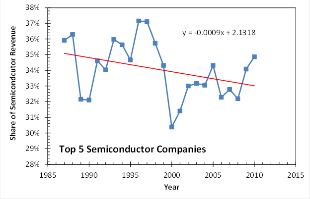

- Home |
- Blog |
- Lithography |
- Published Works |
- For Profit |
- About Chris
- | Gentleman
- | Scientist

The following three articles appeared first as blog posts in October and November, 2011, at http://life.lithoguru.com/.
The data used in this article can be found here: Semicondcutor_Rankings.xlsx
Part 1: It’s hard to stay on top
As part of my fascination with the history of the semiconductor industry, I’ve recently been reviewing data on the annual top 20 semiconductor companies since 1987. Using revenue data compiled by Gartner Dataquest (through 1999) and iSupply (2000 – 2010), it’s been very interesting to see what changes have come about at the top of the heap in our industry. Here is a brief synopsis of some major events in the lives of the top-20 semiconductor companies since 1987:
And those are just some of the changes in the top 20 over the last 25 years. It’s always a wild ride in the semiconductor business.
Next post, I’ll look at the current make-up of the 2010 semiconductor top-20 list and see what has changed in the last 25 years.
Part 2: The top 20 ain’t what it used to be
Looking back on data of the annual top 20 semiconductor companies since 1987, it’s amazing how much has changed. In my last post on this topic, I looked at all the companies that went bankrupt, spun-out, or merged their way into or out of the top 20 list. Change is definitely a constant in this field. Now, let’s look at the makeup of the 2010 list of top semiconductor companies. Here is the list, as generated by iSuppli.
| 1 |
Intel Corporation |
| 2 |
Samsung Electronics |
| 3 |
Toshiba Semiconductor |
| 4 |
Texas Instruments |
| 5 |
Renesas Electronics |
| 6 |
Hynix |
| 7 |
STMicroelectronics |
| 8 |
Micron Technology |
| 9 |
Qualcomm |
| 10 |
Broadcom |
| 11 |
Elpida Memory |
| 12 |
Advanced Micro Devices |
| 13 |
Infineon Technologies |
| 14 |
Sony |
| 15 |
Panasonic Corporation |
| 16 |
Freescale Semiconductor |
| 17 |
NXP |
| 18 |
Marvell Technology Group |
| 19 |
MediaTek |
| 20 |
NVIDIA |
It’s important to note that foundries are excluded from this accounting – their revenue is attributed to the companies placing the orders. Thus, this is a semiconductor product-based top-20 list, not a semiconductor maker-based top-20 list.
And that distinction is obvious when looking at the make-up of the 2010 top-20. Six of the top 20 companies are fabless. Another seven are “fab-lite”, meaning they have stopped investing in new fabs or leading-edge manufacturing. That leaves just seven leading-edge semiconductor manufacturers in the top 20. Of those, four make mostly memory (80% of Samsung’s revenue came from memory), two make mostly logic, and one (Toshiba) makes a fair amount of both.
As a point of reference, if TSMC’s revenue were attributed to TSMC rather than their customers, they would be in fourth place, just barely behind Toshiba. The next two largest foundries, UMC and GlobalFoundries, would find themselves near the bottom of the top 20.
So, we have seven semiconductor manufacturers and three foundries that claim to still want to invest in leading-edge manufacturing capacity. That’s a far cry from just 10 years ago, when all 20 of the top 20 semiconductor companies were committed to building new leading-edge fabs. And even this list of 10 companies can’t really afford to play at the bleeding edge. Only five of them (Intel, Samsung, Toshiba, TSMC, and Hynix) have over $10B/year in semiconductor revenue, probably the minimum needed to build that next $5B mega fab. Add EUV and 450mm wafers into the mix, and you can see that there will be very few players at this ultra-high end of manufacturing.
It is conventional wisdom that the last decade has been one of extreme consolidation in the semiconductor business. Next post, I’ll look at the numbers to see how well that conventional wisdom holds up.
Part 3: A view from the top (20)
It is an article of faith among semiconductor industry watchers that the last 20 years have seen considerable consolidation among semiconductor makers, with further consolidation all but inevitable. Of course, we can all point to mergers (TI and National being the latest) and players exiting from the market (NEC was the #1 chipmaker in the world in 1991, but now is out of the business). But does the data support this view of rampant consolidation?
I’ve been looking over 24 years of annual top 20 semiconductor company revenue data compiled by Gartner Dataquest (1987 – 1999) and iSupply (2000 – 2010), and the results show a more nuanced picture. As I noted in my last post on this topic, foundries are excluded from this accounting – their revenue is attributed to the companies placing the orders. Thus, this is a semiconductor product-based top-20 list, not a semiconductor fab-based top-20 list. With that in mind, let’s look at the trends.
Consider first, the fraction of the total semiconductor market controlled by the top 20 semiconductor companies. The trendline shows a 15% drop in market share over 24 years for the top 20, or about a 0.7% decline on average each year. In other words, the rest of the semiconductor companies (those not in the top 20) saw their market share grow dramatically, from 23% to 38% or so.
Likewise, the top 10 semiconductor companies saw their market share drop by ten points, from about 56% to 46% (or about 0.45% per year). The top five companies, on the other hand, kept about a constant share of 1/3 of the market since 1987. The trendline has a slope not significantly different from zero (-0.1% per year).

But it’s the top two semiconductor makers that show the most interesting trend. The top 2 have seen a 6% rise in their market share, to 22% today, for an increase of about 0.3% per year. The top three makers have seen a more modest 0.15% increase in market share per year since 1987. Thus, consolidation of market share has only come at the very top of the market, the top 2 to be specific. For the rest of the industry, there has be spreading out of the market among more players. Those top 2 players are now, of course, Intel and Samsung. But in 1987 they were NEC and Toshiba (Intel was #10 then, and Samsung wasn’t on the list).
So is the megatrend of semiconductor industry consolidation a myth? Yes and no. From a product perspective, the data is clear. The top two companies have grown in dominance, but for the remaining 80% of the market or so revenue is being spread over a wider array of companies over time. Foundries can be given some credit for the increased democratization of the market, but the trends were in place before foundries even came into existence. In fact, it is more accurate to say that foundries are a result rather than a cause of this democratization. It is the nature of the semiconductor product itself which has driven this increase in the long tail of the distribution of companies.
While there have always been a few blockbuster product categories (memory and microprocessors) where size matters, the vast majority of semiconductor revenue comes from niche (or at least small market share) products. Big companies don’t excel at making lots of niche products. Thus, small to medium-sized companies who stay close to their customers are able to compete well against their larger rivals. It is likely that this trend will continue so long as Moore’s Law continues.
Moore’s Law keeps the few big players still able to invest in new fabs quite busy, and they need big market categories to justify their big investments. There has been considerable consolidation in the industry if you consider fabs rather than products, since there are now only about five companies that are likely to stay at the front of Moore’s Law over the next few years. And these top five manufacturers have seen growth in their share of fab output. But I doubt that a smaller number of fabs competing at the very high-end of the market will somehow reverse the trend of dispersion for the other 80% of the market. That is, until Moore’s Law ends. Then, these big companies with their big fabs are likely to turn their attentions to markets that seemed too diffuse to worry about. What happens then, in a post-Moore’s Law world, is anyone’s guess.
Chris Mack is a writer in Austin, Texas.
© Copyright 2011, Chris Mack.